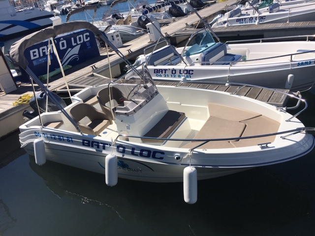
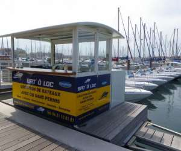

Hello, I am Lucie GAFFURI
Dear network, I am currently following the PGE program at IESEG School Of Management. The reason of my presence on LinkedIn is to develop my network, before anything else. I am curious, ambitous, and discovering the everyday life of professionals like you strongly interest me. I would be happy to exchange with you.
Discover my LinkedIn profileStudies
Second-year student ranked 27th at IESEG School of Management. I follow english courses :
- Cost accounting
- Financial analysis
- Human behavior
- English for business
- Marketing management
- Digital innovation
- ...
This list is non-exhaustive and prove you only an overview of my courses.

I will study abroad for the next semester. I chose to discover Bocconi University in Milan (Italy), in which I will discover many topics, especially about finance and luxury industry.
Professional experience
Cleaning and handling of boats within a team of 10 people. My autonomy, initiative and team spirit enabled me to distinguish myself and to learn a lot of this experience.
Reception and information of a demanding clientele, for which a fine and developed relationship is essential to finally conclude the sale of the rental service, specific to each customer. Politeness has also been central and crucial when selling the service.
 Languages I speak
- French (Native)
- English (Bilingual)
- Spanish (B1)
- Italian (A2)